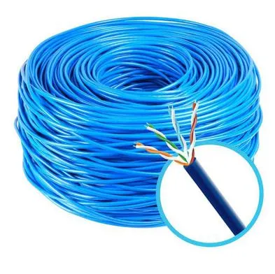
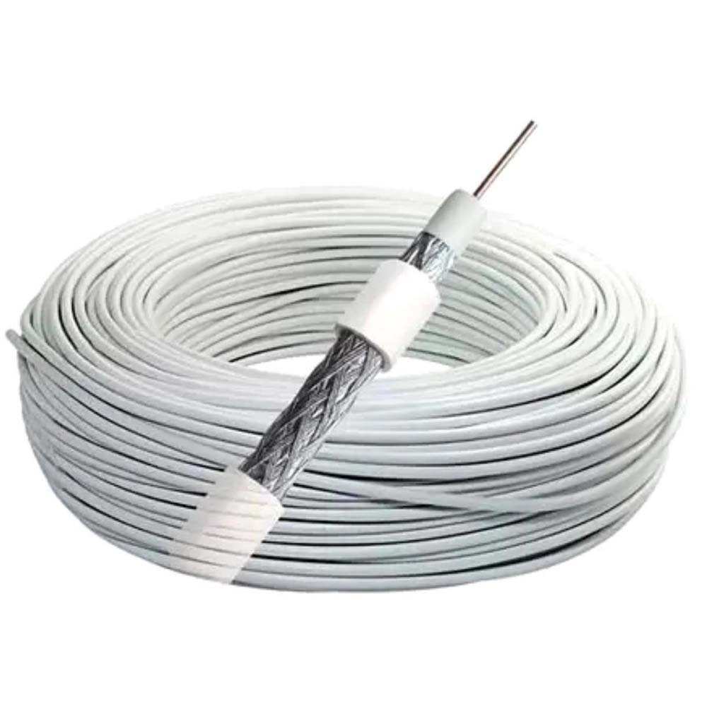
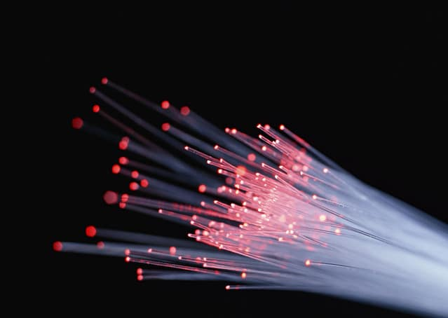

Guia Interativo de Cabos de Rede
A escolha do cabo certo é a fundação para uma rede rápida e confiável. Explore os tipos mais comuns para entender qual se adapta melhor às suas necessidades.
Representação de um cabo Par Trançado (STP), com blindagem externa e pares de fios de cobre.
Par Trançado (UTP/STP)
O cabo mais comum para redes locais (LANs), equilibra custo e performance. Consiste em pares de fios de cobre trançados para reduzir interferências.
Vantagens
- Custo baixo
- Fácil de instalar
- Flexível
Desvantagens
- Suscetível a EMI
- Limites de distância (~100m)
- Velocidade inferior à fibra
Representação da estrutura de um cabo Coaxial, com seu núcleo, isolante, blindagem e capa externa.
Cabo Coaxial
Com um condutor central e blindagem robusta, é ideal para transmissão de vídeo e dados em ambientes com mais ruído.
Vantagens
- Boa resistência a ruído (EMI)
- Cobre distâncias maiores que UTP
Desvantagens
- Menos flexível
- Instalação mais complexa
- Largura de banda limitada
Representação de um cabo de Fibra Óptica, transmitindo dados como pulsos de luz através de um núcleo de vidro.
Fibra Óptica
Transmite dados como pulsos de luz, oferecendo velocidade, distância e segurança inigualáveis. É a espinha dorsal da internet moderna.
Vantagens
- Velocidade altíssima
- Transmissão por longas distâncias
- Imune a interferência (EMI)
- Alta segurança
Desvantagens
- Custo elevado
- Frágil e delicado
- Instalação especializada
Comparativo Técnico
Este gráfico compara os tipos de cabo em quatro métricas essenciais. Os valores são representativos para facilitar a comparação visual e a tomada de decisão.